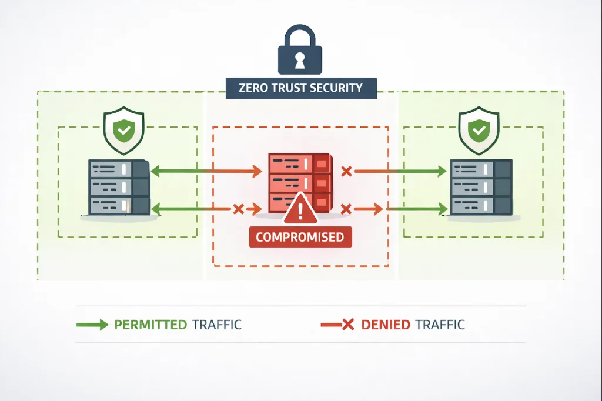
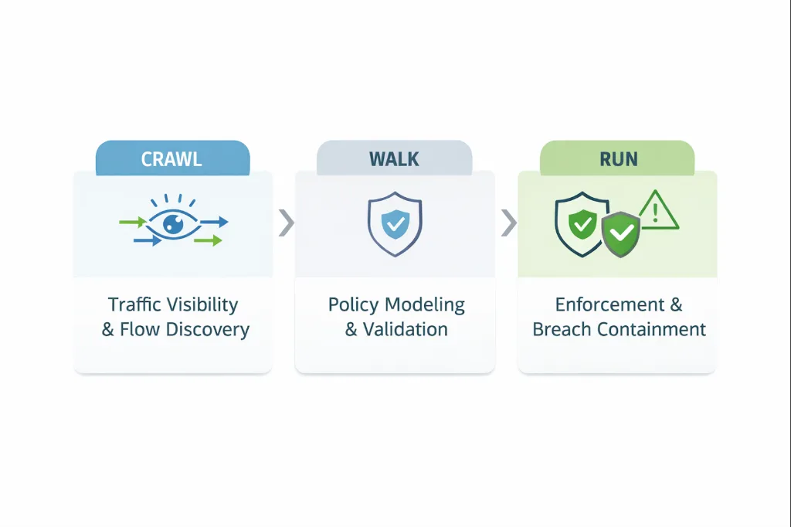
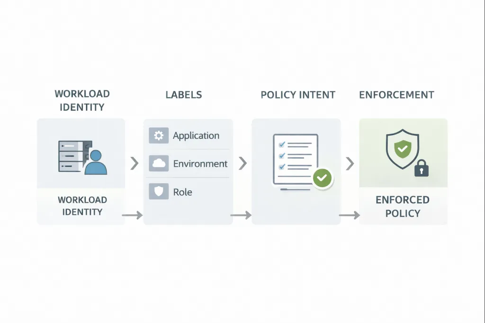

Security · Zero Trust
Microsegmentation Done Right: A Practical, Phased Approach for Zero Trust Security

Introduction: Why Microsegmentation Still Matters
Microsegmentation is no longer an emerging concept—it is a core control in modern Zero Trust architectures. As organizations move toward hybrid cloud, Kubernetes, and highly distributed application models, traditional perimeter defenses and coarse network segmentation fail to contain breaches or prevent lateral movement.
Yet many microsegmentation initiatives struggle to reach full enforcement. Projects stall after visibility, policies become too complex to manage, or enforcement introduces operational risk.
The difference between success and failure is not tooling—it is methodology.
This article outlines a proven, phased microsegmentation approach that aligns security architecture with platform execution, ensuring policies are both enforceable and resilient in production environments.
Why Microsegmentation Projects Fail
Before discussing implementation, it’s important to understand common failure patterns:
- Policies designed around IP addresses instead of workload identity
- Enforcement attempted before traffic behavior is understood
- Lack of phased rollout and rollback mechanisms
- Poor alignment between security architects and engineering teams

Microsegmentation is not a single configuration change. It is a controlled transition from implicit trust to explicit, identity-based access.
Phase 1: Crawl — Establish Visibility and Context
The Crawl phase is focused entirely on observability. No traffic is blocked during this stage.

Architectural Goals
- Identify all east–west communication paths
- Understand application dependencies
- Expose undocumented or legacy flows
Operational Activities
- Collect flow telemetry from hosts, VMs, and containers
- Map workloads to applications, environments, and owners
- Validate traffic patterns over time, not snapshots
This phase creates the ground truth. Any policy designed without this data will eventually fail in enforcement.
Phase 2: Walk — Model and Validate Policy Intent
The Walk phase translates architectural intent into enforceable policy logic without immediately introducing risk.
Policy Design Principles
- Identity-based, not network-based
- Explicit allow rules only
- Environment and role separation by default

Key Outcomes
- Policies are simulated against real traffic
- Enforcement begins in limited or selective scope
- Exceptions are justified, documented, or eliminated
This phase is iterative. Policies evolve as understanding improves, ensuring enforcement aligns with real application behavior.
Phase 3: Run — Enforce Least Privilege at Scale
The Run phase is where microsegmentation delivers its primary security value.
At this stage:
- Only explicitly allowed flows are permitted
- Lateral movement paths are closed
- Breach containment becomes automatic
Because enforcement is based on workload identity and labels, policies remain consistent across cloud, on-prem, and containerized environments. Mature teams treat this phase as policy-as-code, with continuous updates and validation.
Bridging Security Architecture and Platform Engineering
Microsegmentation succeeds when architectural intent and operational execution remain tightly aligned.
- Security architects define trust boundaries, blast-radius reduction, and compliance requirements
- Platform engineers ensure policies are deployable, observable, and reversible
A phased model allows both roles to operate independently while working toward the same outcome: enforceable Zero Trust.
Frequently Asked Questions (FAQ)
What is microsegmentation in Zero Trust security?
Microsegmentation is a security approach that restricts communication between workloads using identity-based policies instead of network boundaries. In a Zero Trust model, microsegmentation ensures that every workload interaction is explicitly allowed, reducing lateral movement and limiting breach impact.
Why do most microsegmentation projects fail?
Most failures occur due to premature enforcement, reliance on IP-based rules, lack of traffic visibility, and poor alignment between security architecture and platform operations. Successful programs follow a phased approach that prioritizes visibility and validation before enforcement.
What is the Crawl-Walk-Run approach to microsegmentation?
The Crawl-Walk-Run model is a phased deployment strategy:
- Crawl: Observe traffic and establish baseline visibility
- Walk: Model and validate policies with limited enforcement
- Run: Enforce least-privilege communication at scale
How does microsegmentation prevent lateral movement?
Microsegmentation prevents lateral movement by denying all east–west traffic by default and allowing only explicitly defined communication paths. If one workload is compromised, enforced policies prevent the attacker from accessing other systems.
Is microsegmentation suitable for cloud and Kubernetes environments?
Yes. Identity-based microsegmentation works across on-prem, cloud, and Kubernetes environments because it does not rely on static IP addresses. Policies remain consistent even when workloads scale, move, or restart.
What’s the difference between microsegmentation and network segmentation?
Traditional network segmentation relies on VLANs, subnets, and firewalls. Microsegmentation operates at the workload level, using identity and labels to enforce policy, making it more granular, scalable, and resilient to infrastructure changes.
Conclusion
Microsegmentation is not about blocking traffic—it is about controlling trust.
By adopting a Crawl-Walk-Run approach, organizations can move from visibility to enforcement without disrupting production, while ensuring policies are durable, auditable, and scalable.
When implemented correctly, microsegmentation becomes a long-term security capability—not a stalled initiative.